1
21st.dev'de shader bul
21st.dev'de Library menüsünden Components'e gir, Shaders filtresini seç. Yüzlerce shader var. Kartın üstünde imleci gezdir, canlı önizlemeyi gör.
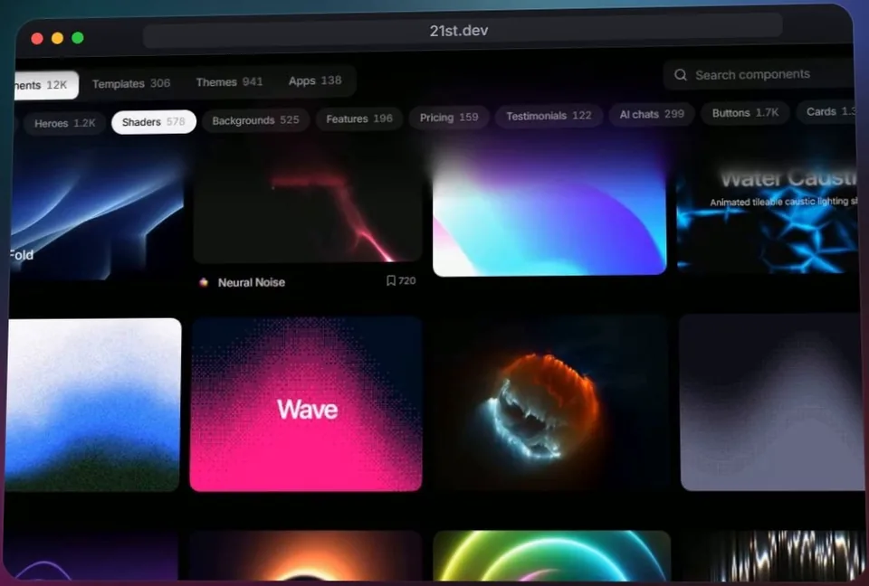
Videonun sonundaki arka plan bizim test sitemizde çalışıyor. Aynısını ajansa gitmeden sen de yaparsın: 21st.dev'de beğendiğin shader'ı seç, prompt'unu kopyala, Claude Code'a yapıştır.
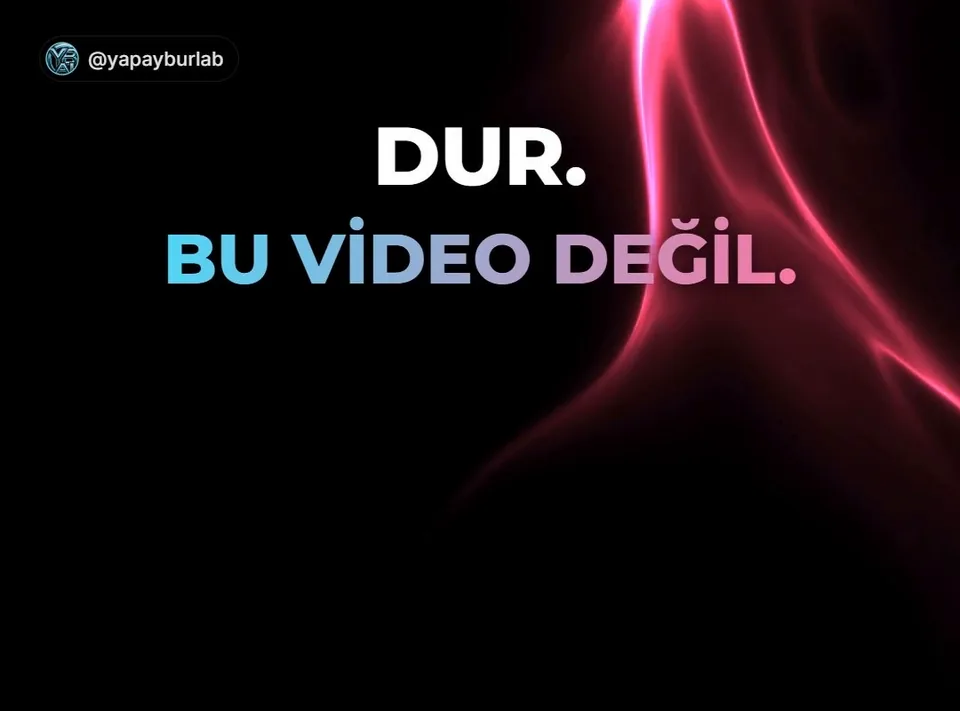
Ücretsiz. Gezinmek hesapsız açık; kopyalamak için hesap gerekir. Ücretsiz hesap günde 2 bileşen kopyalar.
Resmi siteden kur: nodejs.org
Resmi kurulum: kurulum sayfası
21st.dev'de Library menüsünden Components'e gir, Shaders filtresini seç. Yüzlerce shader var. Kartın üstünde imleci gezdir, canlı önizlemeyi gör.

Beğendiğin shader'ın sayfasına gir, Copy prompt butonuna bas. Sağ altta “1 of 2 free copies used today” çıkar: bugünkü 2 hakkından biri kullanıldı.
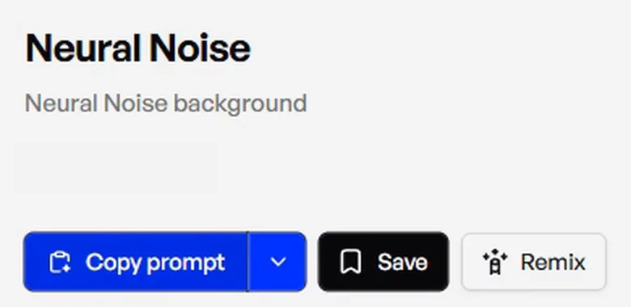
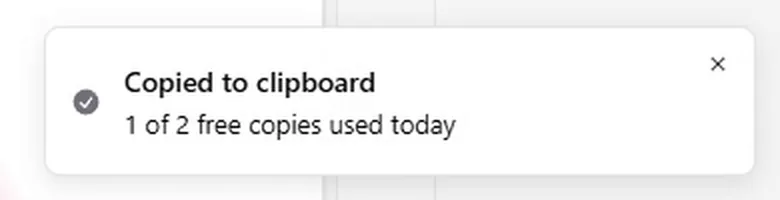
Prompt metni bu sayfada yok: o metin bileşen yazarının emeği. 21st.dev'de Copy prompt butonuyla al.
Terminalde (Windows'ta PowerShell) sırayla çalıştır. benim-sitem yerine istediğin adı yazabilirsin.
npm create vite@6.5.0 benim-sitem -- --template react-ts
cd benim-sitem
npm installBiz bu sürümle denedik; daha yeni sürüm ek sorular sorabilir.
Proje klasöründe Claude Code'u bu komutla aç:
claude --permission-mode acceptEditsBu kip dosya düzenlemelerini sormadan yapar; paket kurulumu, derleme ve sunucu gibi komutlarda yine izin sorar. Bizde 9 kez sordu.
Önce şu cümleyi yaz, ardından 21st.dev'den kopyaladığın prompt'u yapıştır:
Bu Vite projesine ekle ve ana sayfada tam ekran göster.Claude Code izin sorduğunda onaylıyorsun, kurulumu kendisi yapıyor (bizde ~6 dk sürdü). Bizim denememizde eksik paketleri kurdu; Tailwind v4 ayarını, @/ yol kısayolunu, components/ui klasörünü ve tam ekran sayfayı hazırladı; derleyip sunucuyu açtı.
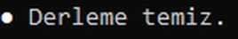
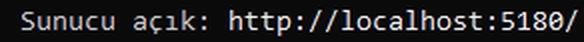
Claude Code sunucuyu kendisi açıp localhost adresini yazar. Sonradan kendin açmak istersen proje klasöründe:
npm run devTerminalde çıkan localhost adresini tarayıcıda aç. İmleci gezdir: arka plan tepki veriyor.
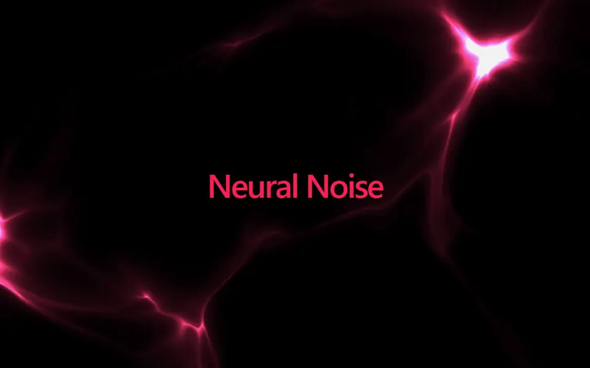
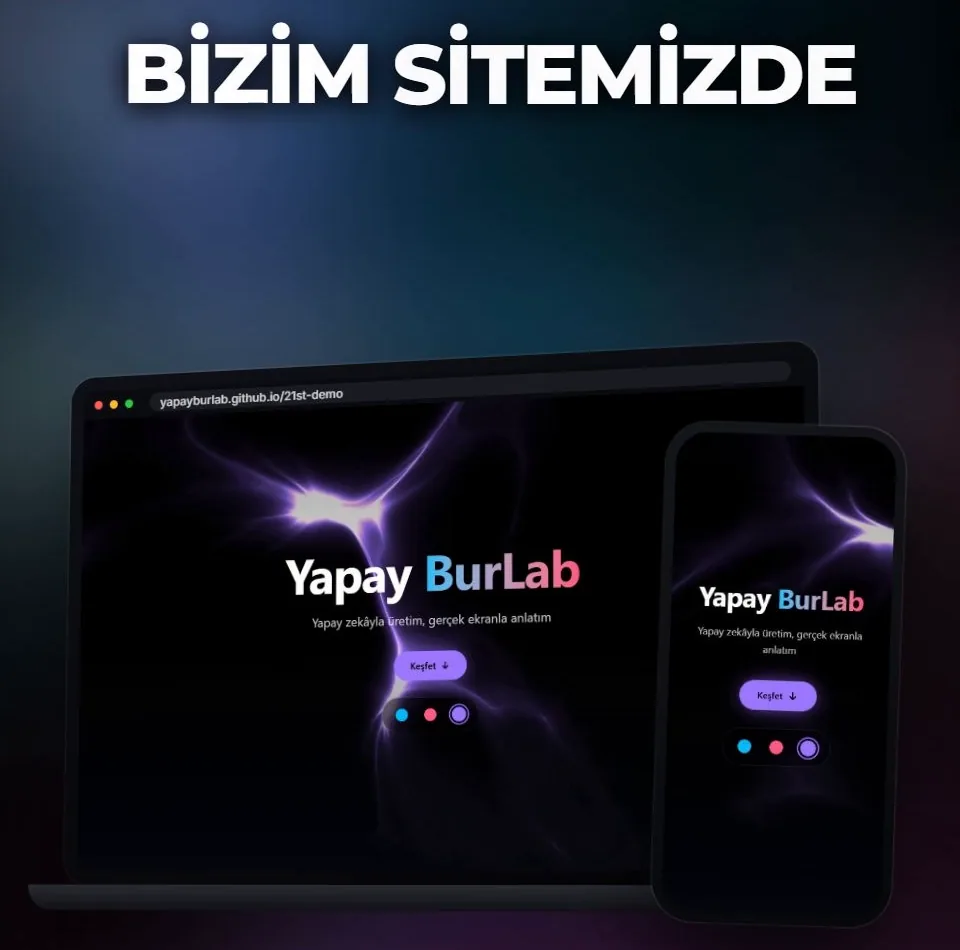
Aynı shader'ı arka plan yapan bir açılış sayfasını da Claude Code'a yaptırdık. Aynı projede tek bir prompt verdik; Claude Code sayfayı ~80 sn'de yazdı. Derlemeyi biz ayrıca çalıştırdık: temiz.
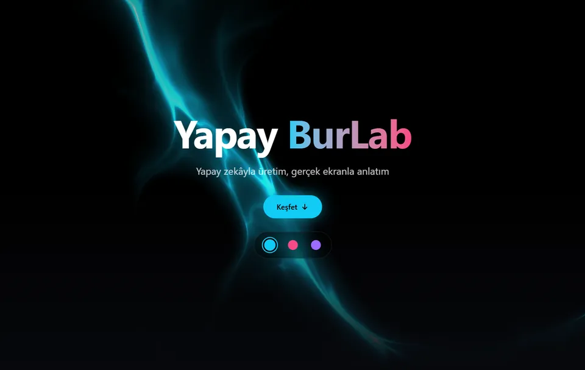
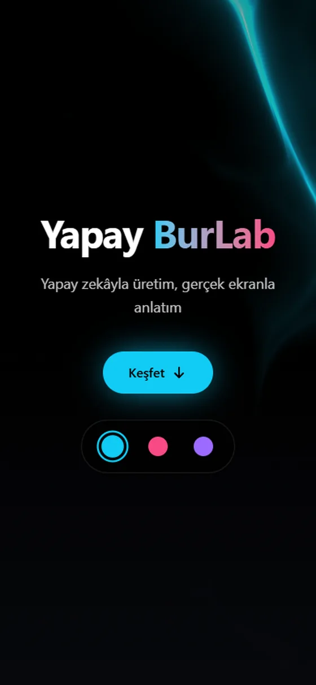
Kendi markana uyarlaman için prompt'un kısa hali. Köşeli parantezleri kendi bilgilerinle doldur:
Bu projede tek sayfalık bir açılış sayfası yap (React + Tailwind, mevcut yapı korunsun).
- Hero: NeuralNoise bileşeni yalnız hero bölümünün tam ekran arka planı olsun, sayfanın tamamını kaplamasın.
- Hero ortasında büyük başlık "[Markanın adı]", alt başlık "[Tek cümlelik sloganın]" ve "[Buton yazısı]" butonu (tıklayınca aşağıya yumuşak kaysın).
- Hero'nun altında 3 kartlık ızgara (her kartta kısa başlık + bir cümle), kısa bir metin bölümü ve alt bilgi (marka adı + yıl).
- Koyu, modern tasarım; vurgu renkleri [renk 1] ve [renk 2]; büyük, net yazı (dış font/CDN kullanma). Mobilde (390 px) düzgün görünsün.
- Benim vermediğim marka, kişi ya da şirket adı yazma. Türkçe karakterleri doğru kullan.
- Ortadaki eski "Neural Noise" demo yazısını kaldır.
- Bitince npm run build ile derlemenin temiz olduğunu doğrula.Bizim denememizde: başlık “Yapay BurLab”, alt başlık “Yapay zekâyla üretim, gerçek ekranla anlatım”, buton “Keşfet”, renkler #11CBF5 ve #F74A84. Claude Code sayfayı tarayıcıda görmedi; mobil görünümü biz kontrol ettik. Sen de npm run dev ile açıp telefon genişliğinde bak.
Hero'nun altındaki 3 renkli seçiciyi (Turkuaz, Pembe, Mor) sonradan biz ekledik. Seçtiğin renk NeuralNoise'un color prop'una gider; arka plan yeni renge yumuşakça geçer. Canlı demoda kendin deneyebilirsin.
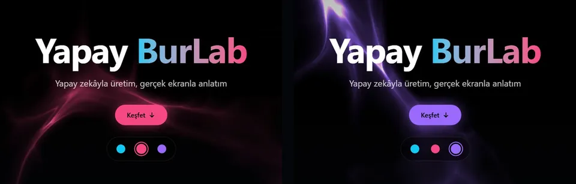
npm run dev hata veriyor: Paket kurulumu yarım kalmış olabilir. Proje klasöründe şu iki komutu çalıştır:
npm install -D tailwindcss@^4 @tailwindcss/vite@^4 @types/node
npm install clsx tailwind-merge@/components/ui yolu: 21st.dev bileşenleri bu yolu bekler. Claude Code kurmadıysa “@/ yol kısayolunu ve components/ui klasörünü kur” diye iste.Galeriden kendi sitene uyan bir shader seç ve canlı önizlemede imleçle dene.
Claude Code'a “rengi markamın rengine çevir, hızını yavaşlat” yaz. Kendi renginle nasıl göründüğüne bak.
6. adımdaki prompt'ta köşeli parantezlere kendi markanın adını, sloganını ve renklerini yaz, Claude Code'a ver. Sitenin ilk sayfası hazır.
Hangi ücretsiz siteyi ya da bileşeni denememi istersin? Videonun altına yaz; en çok istenen sıradaki videoda.